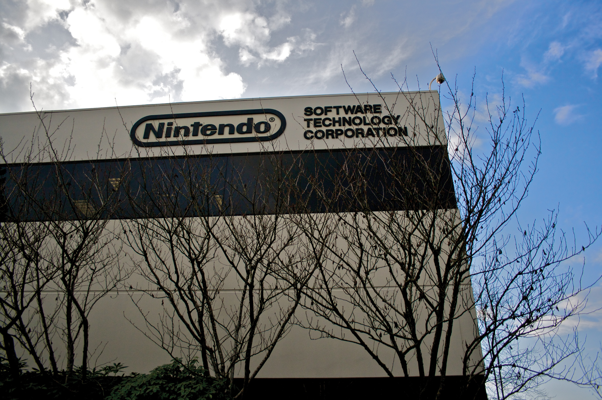
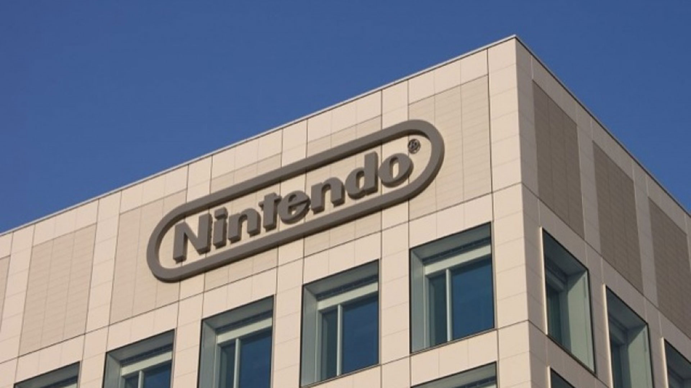
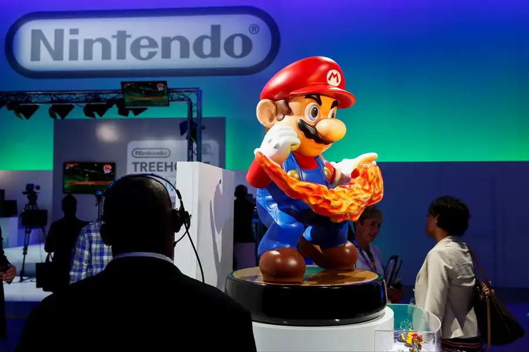
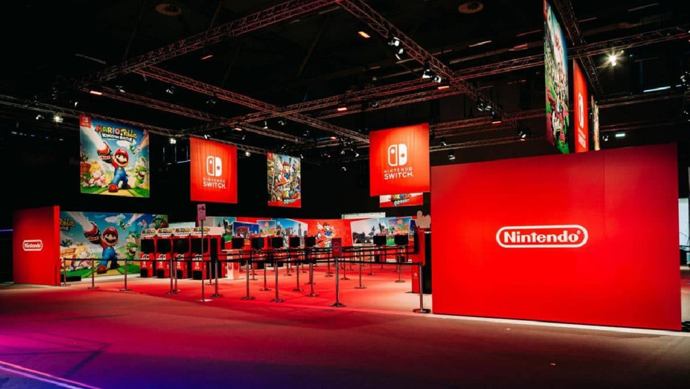
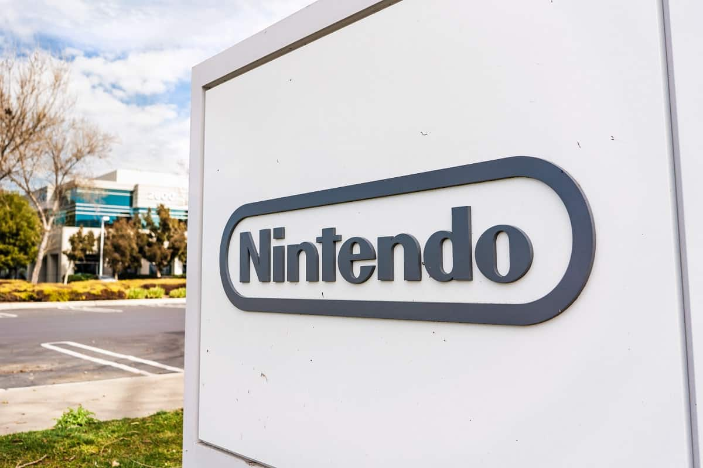
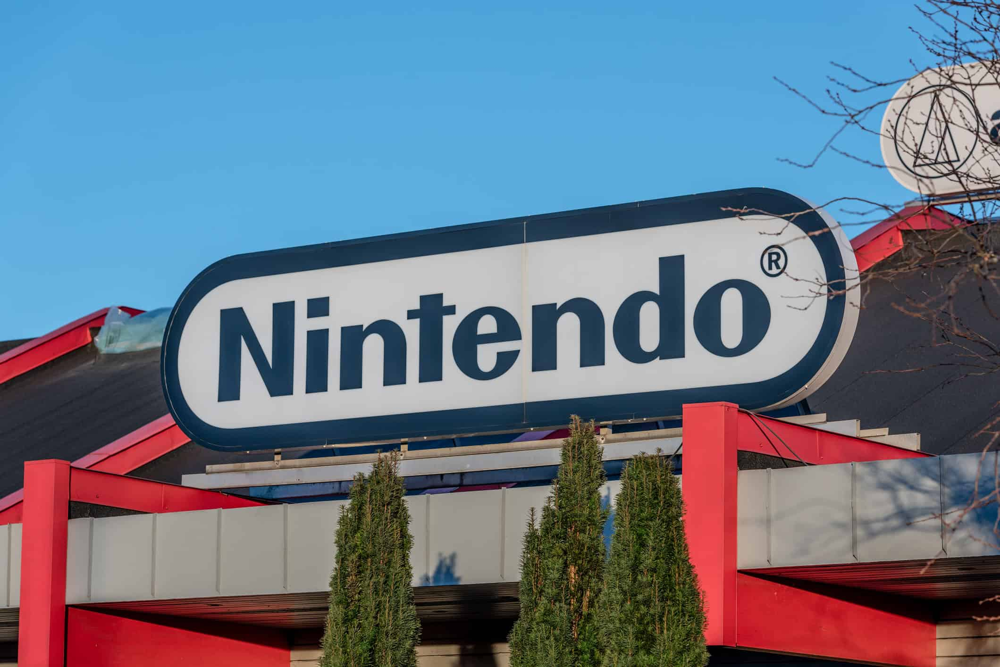
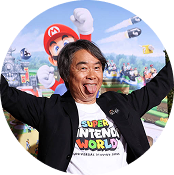

Sobre
Mais do que uma fabricante de videogames, a Nintendo se ergue como uma guardiã da imaginação e da diversão pura. É um ateliê lúdico onde o ato de jogar não se limita à tecnologia, mas se funde com a surpresa, a exploração e o sorriso espontâneo. Sua narrativa é a de uma visionária que, em sua essência, não apenas criou consoles, mas arquitetou universos inteiros que redesenharam o conceito de entretenimento interativo. Sua gênese foi um divisor de águas, um rompimento audacioso com sua própria identidade secular. Ao migrar das cartas Hanafuda para os brinquedos eletrônicos e, por fim, para os videogames, a Nintendo não apenas abraçou a inovação, mas forjou uma nova filosofia: a jogabilidade supera o poder bruto. Foi o convite para que uma nova geração de jogadores, de todas as idades e habilidades, descobrisse a magia em pixels e, mais tarde, em mundos tridimensionais. A consolidação dessa visão veio quando a empresa transcendeu radicalmente a ideia de console como um simples hardware. Ela se infiltrou no cotidiano das famílias como o coração pulsante da sala de estar e do bolso, um centro de experiências compartilhadas e pessoais. Foi quando a marca percebeu que seu domínio não era apenas sobre bits e polígonos, mas sobre o momento em que um pai e um filho balançam um controle juntos no Wii, ou quando um amigo mostra um segredo descoberto no Game Boy. Este foi o alicerce de seu império, construído não por processadores, mas pelas memórias afetivas de milhões. O terceiro capítulo dessa saga foi uma lição de resiliência e reinvenção constante. Diante de concorrentes que seguiam a corrida tecnológica, a Nintendo dobrou a aposta na originalidade, introduzindo peças fundamentais em seu legado: a interação tátil do DS e o controle por movimento do Wii. Ao tecer uma rede de inovações em torno do jogador, transformou a experiência de jogo em uma cerimônia de descoberta e acessoibilidade. A ideia de que qualquer pessoa pode ser um jogador foi institucionalizada, criando um ciclo virtuoso de expansão do mercado que solidificou um fenômeno cultural, não uma simples linha de produtos. A quarta era representou um retorno triunfante à sua essência híbrida e unificadora. Foi um renascimento focado na primazia da experiência sem amarras. Seu console, o Nintendo Switch, operando como um ateliê de possibilidades, elevou a relação jogador-mundo a uma simbiose, onde cada transição da TV para o modo portátil era uma expansão da liberdade. Esta fase não vendeu apenas um console; vendeu flexibilidade, a promessa de levar e trazer os mundos que se ama sem interrupção. Hoje, a fronteira atual da marca é um monumento à perpetuidade de seus universos e à fidelidade à sua alma. Suas franquias, como Super Mario, Zelda e Pokémon, são desenhadas não para serem consumidas, mas para serem vividas e revividas. Através de uma filosofia que liberta a diversão de tendências efêmeras, a barreira entre gerações se dissolve. A estratégia expandiu-se, tornando seus personagens em ícones eternos, provando que as grandes aventuras em seu ventre são imensas o suficiente para ressoar em qualquer época, e para qualquer coração que ainda saiba brincar.
Fotos da empresa







Shigeru Miyamoto
Frequentemente chamado de "pai dos videogames modernos", Shigeru Miyamoto é a mente criativa por trás das franquias mais icônicas da Nintendo. Nascido em Sonobe, Japão, em 1952, Miyamoto juntou-se à Nintendo em 1977 como artista. Sua grande chance veio com a criação de Donkey Kong em 1981, um sucesso estrondoso que lançou a carreira do personagem que viria a ser o Mario. A filosofia de design de Miyamoto baseia-se em suas experiências de infância explorando cavernas e florestas em Kyoto, traduzindo essa sensação de descoberta e admiração para o mundo digital. Ele revolucionou o gênero de plataforma com Super Mario Bros. e inventou o gênero de ação-aventura com The Legend of Zelda. Miyamoto defende que os jogos devem ser intuitivos e que a tecnologia deve servir à jogabilidade. Sua abordagem busca criar experiências que ressoem emocionalmente com os jogadores. Como Diretor Representante da Nintendo, ele continua a supervisionar o desenvolvimento de jogos e a expansão das IPs da Nintendo, garantindo que o espírito de inovação e diversão permaneça no coração da empresa.